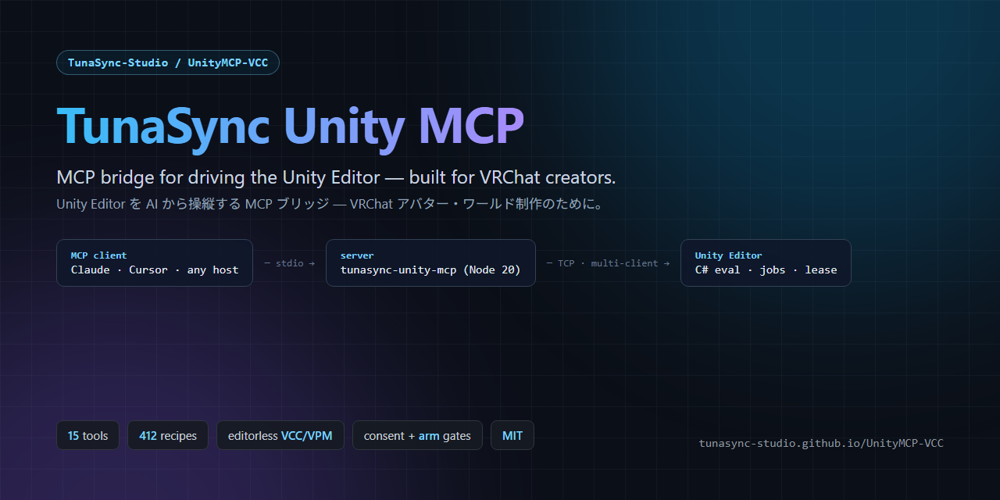

TunaSync Unity MCP (UnityMCP-VCC)
MCP bridge for driving the Unity Editor — built for VRChat avatar & world creation.
Unity Editor を AI から操縦する MCP ブリッジ — VRChat 制作のために。
1 · Unity side — VCC / ALCOM
Add repository to VCCThen install TunaSync Unity MCP into your project. / ボタンが反応しない場合は URL を VCC の Settings → Packages → Add Repository へ貼り付け。
2 · AI side — MCP client (Node 20+)
claude mcp add unity-mcp -- npx -y tunasync-unity-mcp
Any MCP host works (stdio). / Claude 以外の MCP ホストでも stdio 登録で動作します。
3 · In Unity
Open the project → approve the one-time consent dialog → Tools > TunaSync Unity MCP > Status Window → ask your assistant for unity_health_check.
プロジェクトを開く → 初回の同意ダイアログを承認 → Status Window → AI に unity_health_check。